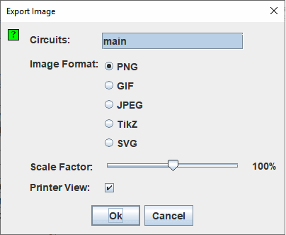

导出图像
当您选择| Export Image... |时，Logisim-evolution 将显示一个包含四个选项的对话框。

配置导出
- 电路：一个列表，您可以在其中选择一个或多个应导出到图像文件中的电路。 （空电路不显示为选项。）
- 图像格式：您可以创建 PNG、GIF、JPEG、TikZ 和 SVG 文件。 我推荐 PNG 文件：GIF 格式已经相当过时，而 JPEG 格式会在图像中引入伪影，因为 JPEG 格式实际上适用于摄影图像。
- 比例因子：您可以使用此滑块在将图像转储到图像文件时缩放图像。
- 打印机视图：使用统计信息或仅使用架构生成的图像的样式。

单击确定后，Logisim-evolution 将显示文件选择对话框。 如果您选择了一个电路，请选择要放置图像的文件。 如果选择了多个电路，请选择文件放置的目录； Logisim-evolution 将根据电路名称命名图像（例如 main.png）。